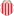
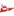

🏆 EURO 2024
| Date | Fixture  Bold-faced team is selected by AIGoalie to win. Bold-faced team is selected by AIGoalie to win. |
Odds Pre-match odds of the selected team winning. Note that odds are fetched once per day at 00:00 GMT, meaning some matches may have live odds. Also odds may not be available for all leagues. |
Win How confident AIGoalie is that the selected team will win. Low confidence indicates unpredictability of the match. ▼ |
Result Whether the selected team won, drew, or lost. |
Over The minimum number of goals predicted by AIGoalie. ⚽ = over 0.5 ⚽⚽ = over 1.5 ⚽⚽⚽ = over 2.5 ... ► |
Alerts Home 🏥 = Considerable injuries 🏥🏥 = Major injuries 📉 = Dip in form Note, you may see injuries when expanding match but no alert here, meaning the model does not consider them important. |
Alerts Away 🏥 = Considerable injuries 🏥🏥 = Major injuries 📉 = Dip in form Note, you may see injuries when expanding match but no alert here, meaning the model does not consider them important. |
|---|
🏆 Copa América 2024
| Date | Fixture Bold-faced team is selected by AIGoalie to win. |
Odds Pre-match odds of the selected team winning. Note that odds are fetched once per day at 00:00 GMT, meaning some matches may have live odds. Also odds may not be available for all leagues. |
Win How confident AIGoalie is that the selected team will win. Low confidence indicates unpredictability of the match. ▼ |
Result Whether the selected team won, drew, or lost. |
Over The minimum number of goals predicted by AIGoalie. ⚽ = over 0.5 ⚽⚽ = over 1.5 ⚽⚽⚽ = over 2.5 ... ► |
Alerts Home 🏥 = Considerable injuries 🏥🏥 = Major injuries 📉 = Dip in form Note, you may see injuries when expanding match but no alert here, meaning the model does not consider them important. |
Alerts Away 🏥 = Considerable injuries 🏥🏥 = Major injuries 📉 = Dip in form Note, you may see injuries when expanding match but no alert here, meaning the model does not consider them important. |
|---|
🌍 Global
| Date | Fixture Bold-faced team is selected by AIGoalie to win. |
Odds Pre-match odds of the selected team winning. Note that odds are fetched once per day at 00:00 GMT, meaning some matches may have live odds. |
Win How confident AIGoalie is that the selected team will win. Low confidence indicates unpredictability of the match. ▼ |
Result Whether the selected team won, drew, or lost. |
Over The minimum number of goals predicted by AIGoalie. ⚽ = over 0.5 ⚽⚽ = over 1.5 ⚽⚽⚽ = over 2.5 ... ► |
Alerts Home 🏥 = Considerable injuries 🏥🏥 = Major injuries 📉 = Dip in form Note, you may see injuries when expanding match but no alert here, meaning the model does not consider them important. |
Alerts Away 🏥 = Considerable injuries 🏥🏥 = Major injuries 📉 = Dip in form Note, you may see injuries when expanding match but no alert here, meaning the model does not consider them important. |
|
|---|---|---|---|---|---|---|---|---|
| Mon. 08 Jul. | Los Angeles Galaxy  2:1  Minnesota United FC Form: WWWL Form: LLLL |
0.4 vs -1.03 | 42% | ✓ | ⚽⚽⚽ 3.16 |
📉 Home team has a dip in form recently | 📉 Away team has a dip in form recently | |
| Mon. 08 Jul. | CF Pachuca  0:1  CF Monterrey Form: WDDW Form: WDLW |
-0.8 vs 0.38 | 1.93 | 40% | ✓ | ⚽ 1.81 |
📉 Home team has a dip in form recently | 📉 Away team has a dip in form recently |
| Mon. 08 Jul. | FC Anyang  3:0  Cheonan City Form: LWDW Form: DWLD |
0.37 vs -1.12 | 1.65 | 39% | ✓ | ⚽ 1.79 |
📉 Away team has a dip in form recently | |
| Mon. 08 Jul. | CA Rosario Central  postponed  CA Barracas Central Form: WLDD Form: DLLL |
0.25 vs -1.1 | 2.22 | 30% | ⚽ 1.62 |
📉 Home team has a dip in form recently | 📉 Away team has a dip in form recently | |
| Mon. 08 Jul. | Grobinas SC/LFS  0:0  FK Tukums 2000 Form: WLWW Form: LWDL |
0.17 vs -0.95 | 2.36 | 24% | ⁃ | ⚽⚽ 2.9 |
📉 Home team has a dip in form recently | 📉 Away team has a dip in form recently |
| Mon. 08 Jul. | Strømsgodset IF  18:00  Sandefjord Fotball Form: WWDD Form: DDLL |
0.13 vs -1.12 | 1.85 | 21% | ⚽⚽ 2.16 |
📉 Home team has a dip in form recently | 📉 Away team has a dip in form recently | |
| Mon. 08 Jul. | IFK Norrköping  18:00  Djurgårdens IF Form: DLLL Form: WWWL |
-0.54 vs 0.07 | 1.8 | 16% | ⚽⚽⚽ 3.16 |
📉 Home team has a dip in form recently | 📉 Away team has a dip in form recently | |
| Mon. 08 Jul. | Miramar Misiones 2:3  Danubio FC Form: LWWW Form: DDWD |
0.01 vs -0.64 | 2.3 | 10% | ❌ | 😴 0.95 |
📉 Away team has a dip in form recently | |
| Mon. 08 Jul. | Thór Akureyri  postponed  UMF Grindavík Form: DLDD Form: WDDD |
-0.0 vs -0.69 | 10% | ⚽ 1.95 |
📉 Home team has a dip in form recently | 📉 Away team has a dip in form recently | ||
| Mon. 08 Jul. | Portland Timbers  4:1  Nashville SC Form: WWWL Form: WWLL |
-0.03 vs -0.81 | 1.88 | 9% | ✓ | ⚽⚽ 2.56 |
📉 Home team has a dip in form recently | 📉 Away team has a dip in form recently |
| Mon. 08 Jul. | AC Oulu  1:2'  SJK Seinäjoki Form: DWWL Form: DWWW |
-0.03 vs -0.53 | 3.6 | 9% | ⚽⚽⚽ 3.25 |
📉 Home team has a dip in form recently | ||
| Mon. 08 Jul. | FC Inter Turku  2:0'  FC Lahti Form: DWWW Form: WDLD |
-0.04 vs -0.79 | 1.58 | 9% | ⚽⚽ 2.72 |
📉 Away team has a dip in form recently | ||
| Mon. 08 Jul. | Kristiansund BK 18:00  Fredrikstad FK Form: LLWD Form: WDLD |
-0.43 vs -0.12 | 2.12 | 8% | ⚽⚽ 2.71 |
📉 Home team has a dip in form recently | 📉 Away team has a dip in form recently | |
| Mon. 08 Jul. | Västerås SK 18:00  BK Häcken Form: LDDW Form: DLLW |
-0.58 vs -0.12 | 2.46 | 8% | ⚽⚽ 2.02 |
📉 Home team has a dip in form recently | 📉 Away team has a dip in form recently | |
| Mon. 08 Jul. | FH Hafnarfjördur  20:15  KA Akureyri Form: WDDW Form: LLWW |
-0.13 vs -0.55 | 1.85 | 7% | ⚽⚽ 2.89 |
📉 Home team has a dip in form recently | 📉 Away team has a dip in form recently | |
| Mon. 08 Jul. | UCV Moquegua  19:00  Academia Deportiva Cantolao Form: WDLD Form: LDLL |
-0.19 vs -0.53 | 6% | 😴 0.65 |
📉 Home team has a dip in form recently | 📉 Away team has a dip in form recently | ||
| Mon. 08 Jul. | Seongnam FC  1:4  Gyeongnam FC Form: WLLD Form: LLDL |
-0.24 vs -0.43 | 2.54 | 5% | ❌ | ⚽ 1.75 |
📉 Home team has a dip in form recently | 📉 Away team has a dip in form recently |
| Mon. 08 Jul. | San Jose Earthquakes  1:0  Chicago Fire FC Form: LLLL Form: WLLW |
-0.26 vs -0.66 | 2.72 | 5% | ✓ | ⚽⚽ 2.16 |
📉 Home team has a dip in form recently | 📉 Away team has a dip in form recently |
| Mon. 08 Jul. | Colorado Rapids  4:1  St. Louis CITY SC Form: WWLW Form: LDLW |
-0.27 vs -0.76 | 1.69 | 5% | ✓ | ⚽ 1.93 |
📉 Home team has a dip in form recently | 📉 Away team has a dip in form recently |
| Mon. 08 Jul. | Houston Dynamo FC  postponed  Los Angeles FC Form: DWWL Form: DWWW |
-0.3 vs -0.39 | 2.8 | 4% | ⚽⚽ 2.56 |
📉 Home team has a dip in form recently | ||
| Mon. 08 Jul. | Botafogo de Futebol e Regatas  3:0  Clube Atlético Mineiro Form: LWDW Form: DLDL |
-0.37 vs -0.87 | 3% | ✓ | ⚽ 1.84 |
🏥🏥 Home team has MAJOR injuries | 🏥🏥 📉 Away team has MAJOR injuries and a dip in form recently | |
| Mon. 08 Jul. | Sporting Kansas City  3:2  FC Dallas Form: LLWL Form: WLLW |
-0.4 vs -0.91 | 1.27 | 2% | ✓ | ⚽⚽ 2.56 |
📉 Home team has a dip in form recently | 🏥🏥 📉 Away team has MAJOR injuries and a dip in form recently |
Last updated 17:24:50 2024-07-08
Privacy Policy - 18+. Gamble Responsibly. - Terms